Use 3scale toolbox with Red Hat OpenShift API Management
The 3scale toolbox is a command line interface (CLI) for the 3scale API Management platform. The aim of the 3scale toolbox is to help administrators operate their APIs, and to help them automate the delivery of these APIs through Continuous Delivery pipelines.
Compared to the RESTful 3scale admin APIs, the 3scale toolbox has a coarser granularity and as such is easier and less verbose to work with than using directly the fine-grained 3scale admin APIs.
The 3scale toolbox follows the usual conventions from CLIs:
-
Output a non-zero status code on error.
-
stderr contains error messages; stdout contains useful output.
-
The output can be JSON or YAML, making it easy to be parsed by scripts or pipelines.
Another characteristic of the 3scale toolbox is that most operations are idempotent. This means you can express the desired state of the system and the 3scale toolbox will act accordingly: update the existing configuration if it exists, create it when it is missing. Idempotency greatly helps building more reliable automation tools in case of an outage or transient perturbation.
The 3scale API Management is written in Ruby. It is a wrapper around the 3scale APIs.
Installation and Usage of 3scale toolbox
The officially supported method of installing the 3scale toolbox is using the 3scale toolbox container image, and use docker or podman to run the container. This avoids to having to install a Ruby runtime on your workstation.
However, there are are also alternative, albeit unsupported, ways to install and run the toolbox on different target platforms, including RHEL/CentOS/Fedora, Mac and Windows. Please refer to https://github.com/3scale-labs/3scale_toolbox_packaging for installation instructions.
In this lab you will run the 3scale toolbox with Podman or Docker (on a Mac).
|
The instructions in this lab assume you have installed Podman on your workstation. If you want to use Docker instead, substitute |
To download the 3scale toolbox image, you need a Red Hat Customer Portal account.
-
Log in to the Red Hat Ecosystem Catalog (registry.redhat.io):
$ podman login registry.redhat.io Username: <REDHAT_CUSTOMER_PORTAL_ACCOUNT_USERNAME> Password: <REDHAT_CUSTOMER_PORTAL_ACCOUNT_PASSWORD> Login Succeeded!
-
Pull the toolbox container image. The version of the image needs to match the version of the 3scale API Management platform:
$ podman pull registry.redhat.io/3scale-amp2/toolbox-rhel7:3scale2.10
-
Verify the installation:
$ podman run --rm registry.redhat.io/3scale-amp2/toolbox-rhel7:3scale2.10 3scale help
Expected OutputNAME 3scale - 3scale toolbox USAGE 3scale <sub-command> [options] DESCRIPTION 3scale toolbox to manage your API from the terminal. COMMANDS account account super command activedocs activedocs super command application application super command application-plan application-plan super command backend backend super command copy copy super command help show help import import super command method method super command metric metric super command policy-registry policy-registry super command product product super command proxy-config proxy-config super command remote remotes super command service services super command update [DEPRECATED] update super command OPTIONS -c --config-file=<value> 3scale toolbox configuration file (default: /opt/app-root/src/.3scalerc.yaml) -h --help show help for this command -k --insecure Proceed and operate even for server connections otherwise considered insecure -v --version Prints the version of this command --verbose Verbose mode
Create API resources with 3scale toolbox
In this section of the lab, you use the 3scale toolbox to create API resources on 3scale in a programmatic way.
You will use the same Quarkus application which you leveraged in previous labs as well.
Manage remote access credentials
To be able to interface with the 3scale API Management platform, the 3scale toolbox requires an access token and the URL to the 3scale admin portal.
3scale has two types of tokens: access tokens (created by the user) and service tokens (automatically created when a new service is deployed in 3scale).
Access tokens allow API provider admins and members to authenticate against the 3scale admin APIs – Billing, Account Management, and Analytics.
An access token may provide either read and write access, or read only.
Access tokens work according to the member’s rights. Admins can create tokens to authenticate against all three 3scale APIs. Members will be limited by their permissions to access the different parts of the Admin Portal. For example, if a member does not have access to the Billing area, they will not be able to create a token to authenticate against the Billing API.
Tokens are not stored on 3scale. Once created, the token cannot be recovered from 3scale. In case the value is lost, the token needs to be deleted to invalidate it, and a new one created.
In this section of the lab you create an access token for the 3scale admin APIs.
-
Log in to 3scale API Management using your configured IdP.
-
Navigate to Account Settings by clicking on the
 icon on the right of the top menu bar.
icon on the right of the top menu bar. -
On the Account Settings Overview page, navigate to Personal → Tokens.
-
On the Access tokens page, click Add Access Token to create a new access token.
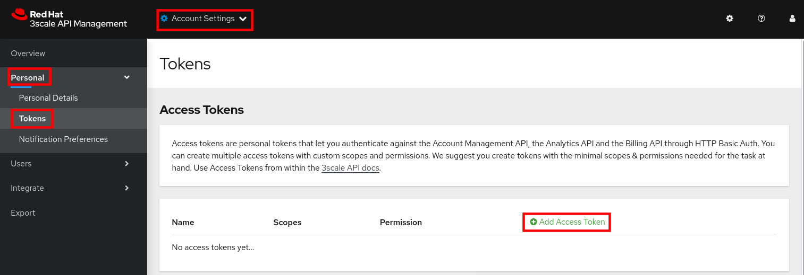 -
On the New Access Token page, enter the following values:
-
Name:
admin token -
Scopes: check
Account Management API,Analytics API,Policy Registry API. -
Permission:
Read & Write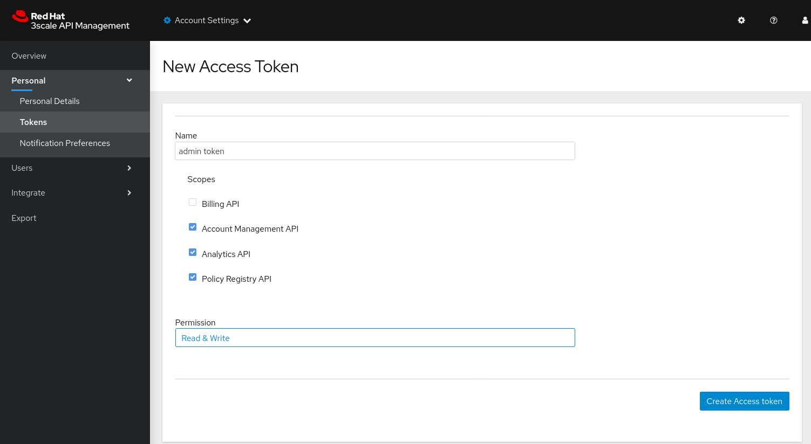 -
Click Create Access token to create the token.
-
On the next page, copy the value of the token, and click I have copied the token.
-
The access token and URL can be passed with every toolbox command in the format https://<ACCESS TOKEN>@<3SCALE_HOSTNAME>.
But to make working with the toolbox easier, the remote access credentials can also be added to the toolbox image.
-
Add the remote credentials to the 3scale toolbox image. Here you use
rhoamas identifier for the credentials. Replace<ACCESS_TOKEN>with the value of the token you created in the previous section, and <3SCALE_HOSTNAME> with the host name of the 3scale API Management platform.$ podman run --name toolbox-container registry.redhat.io/3scale-amp2/toolbox-rhel7:3scale2.10 3scale remote add rhoam https://<ACCESS_TOKEN>@<3SCALE_HOSTNAME>
-
Commit the image in a new image that includes the remote access credentials.
$ podman commit toolbox-container toolbox
-
For the remainder of the lab you can use the newly created
toolboximage to access the remote 3scale API Management instance. For example, to list the Services defined on the 3scale API Management instance:$ podman run --rm toolbox 3scale service list rhoam
Sample OutputID NAME SYSTEM_NAME 2 API api 21 rhoam-openapi btison-lab-rhoam-openapi 22 RHOAM API OIDC rhoam_api_oidc
Storing secrets for toolbox in a container is a potential security risk, for example when distributing the container with secrets to other users or using the container for automation. In this lab you use it mostly for convenience purposes. In real world environments you should use secured volumes in Podman or OpenShift secrets (if running a CI/CD pipeline on OpenShift for example).
-
At any time you can use the
helpfunction of the toolbox to get more details about a command. For example, to get help about theimport openapicommand:$ podman run toolbox 3scale import openapi --help
OutputNAME openapi - Import API definition in OpenAPI specification from a local file or URL USAGE 3scale import openapi [opts] -d <destination> <spec> (/path/to/your/spec/file.[json|yaml|yml] OR http[s]://domain/resource/path.[json|yaml|yml]) DESCRIPTION Using an API definition format like OpenAPI, import to your 3scale API directly from a local OpenAPI spec compliant file or a remote URL OPTIONS --activedocs-hidden Create ActiveDocs in hidden state --backend-api-host-header=<value> Custom host header sent by the API gateway to the backend API --backend-api-secret-token=<value> Custom secret token sent by the API gateway to the backend API -d --destination=<value> 3scale target instance. Format: "http[s]://<authentication>@3scale_domain" --default-credentials-userkey=<value> Default credentials policy userkey --oidc-issuer-endpoint=<value> OIDC Issuer Endpoint --override-private-base-url=<value> Custom private base URL --override-private-basepath=<value> Override the basepath for the private URLs --override-public-basepath=<value> Override the basepath for the public URLs --prefix-matching Use prefix matching instead of strict matching on mapping rules derived from openapi operations --production-public-base-url=<value> Custom public production URL --skip-openapi-validation Skip OpenAPI schema validation --staging-public-base-url=<value> Custom public staging URL -t --target_system_name=<value> Target system name OPTIONS FOR IMPORT -c --config-file=<value> 3scale toolbox configuration file (default: /opt/app-root/src/.3scalerc.yaml) -h --help show help for this command -k --insecure Proceed and operate even for server connections otherwise considered insecure -v --version Prints the version of this command --verbose Verbose mode
Import OpenAPI Spec
The 3scale toolbox allows you to import an OpenAPI specification document for an API. The OpenAPI specification will be introspected and based upon its structure a number of API artifacts will be created on 3scale API Management, including a product, backend, mapping rules and various settings.
In this lab you import the OpenAPI specification for the Quarkus application you used in previous labs. The OpenAPI specification is structured a bit differently compared to the version which is served by the application.
-
Review the OpenAPI specification at https://raw.githubusercontent.com/btison/rhoam-introductory-labs/master/etc/fruits-api.json. Note the following:
-
The document contains a
SecurityScheme, specifying that an API Key is expected in a header with nameuser_key."securitySchemes": { "ApiKeyAuth": { "type": "apiKey", "in": "header", "name": "user_key" } } -
The document has a single
servers.urlelement. Theserver.urlelement’s path component (/) is used as the OpenAPI’sbasePathproperty.
-
-
Import the OpenAPI document into 3scale using the 3scale toolbox:
$ export PROJECT_NAME=<project where you deployed the Quarkus application> $ podman run --rm toolbox 3scale import openapi \ -d rhoam \ https://raw.githubusercontent.com/btison/rhoam-introductory-labs/master/etc/fruits-api.json \ --target_system_name rhoam-api-toolbox \ --override-public-basepath=/v1 \ --override-private-base-url=http://rhoam-openapi.$PROJECT_NAME.svc:8080-
target-system-namespecifies the system name that is used for the Product and Backend that will be created. -
--override-public-basepathspecifies the base path for the exposed API. For the sake of this exercise you decide to expose the API using the/v1base path, rather than the/base path defined in the OpenAPI document. -
--override-private-base-urlspecifies the private base URL for the API. This URL points to the Quarkus application deployed on OpenShift. -
The output of the 3scale toolbox command looks like:
Sample OutputCreated service id: 23, name: Fruits API Service proxy updated destroying all mapping rules Created GET /v1/fruits$ endpoint Created POST /v1/fruits$ endpoint Created DELETE /v1/fruits$ endpoint Service policies updated
-
-
Navigate to the 3Scale Admin Portal and review the API resources created by the 3scale toolbox command. These include:
-
An API Product
Fruits API. The name corresponds to the name in the OpenAPI spec.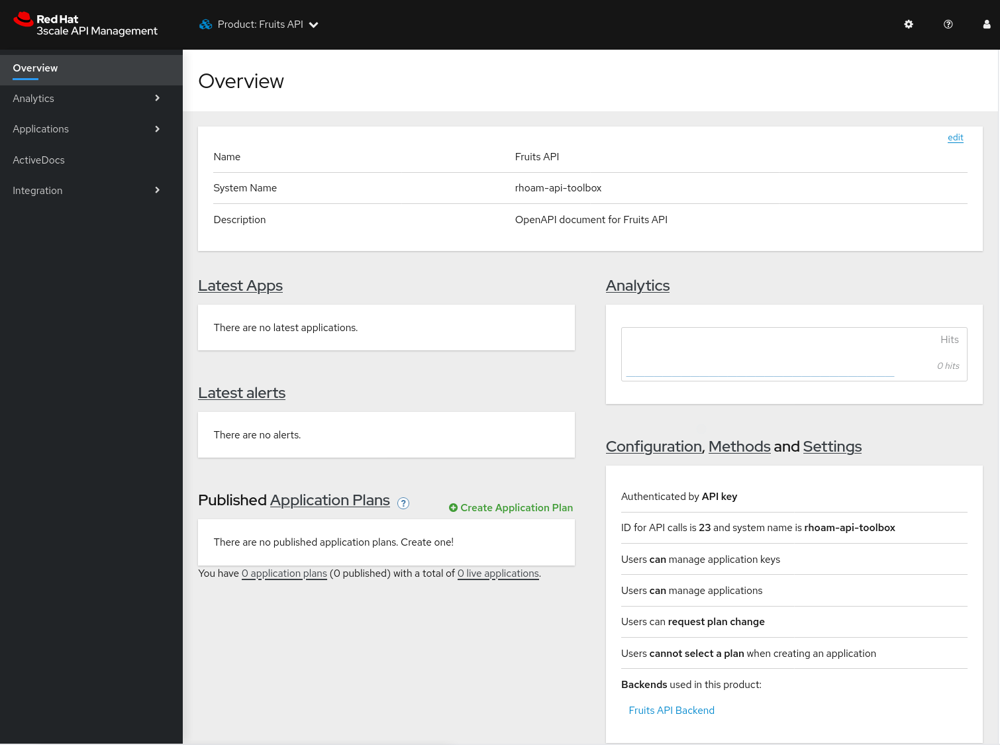 -
A Backend
Fruits API Backend. -
API Product Settings including the Public Base URLs, and authentication settings (API Key as
user_keyHTTP header)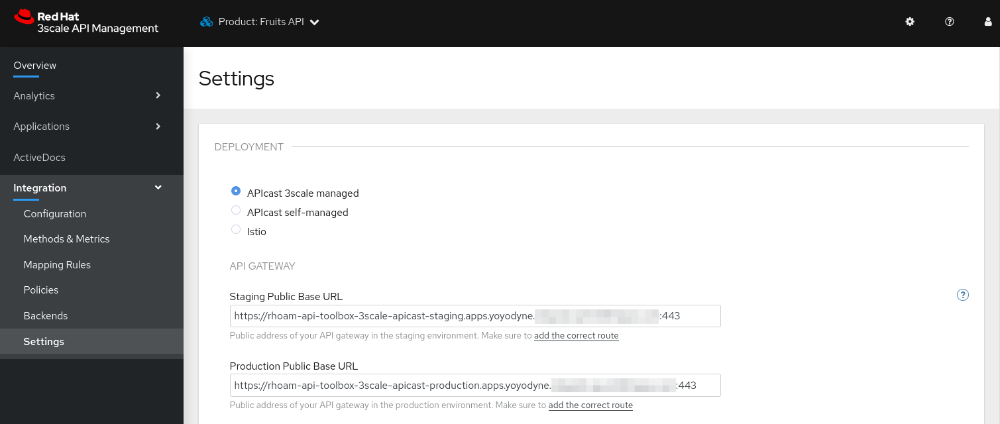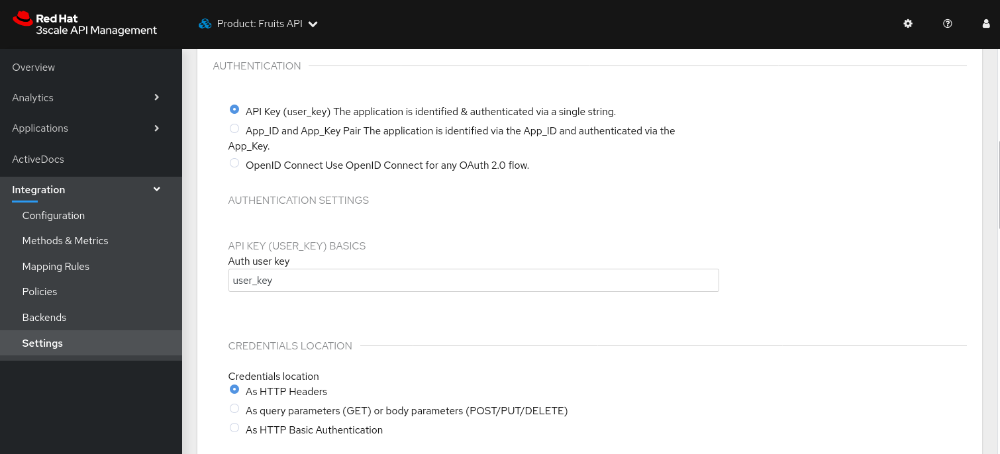 -
Mapping Rules for the 3 operations defined in the OpenAPI specification.
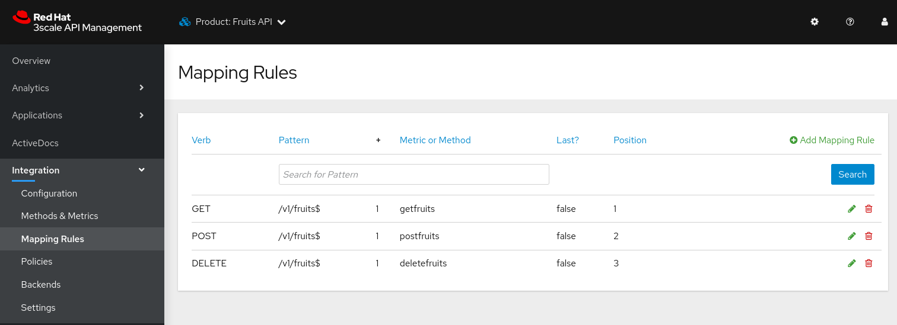Note that the relative URLs of the mapping rules follow the specified public basepath.
-
Methods for the 3 operations defined in the OpenAPI specification.
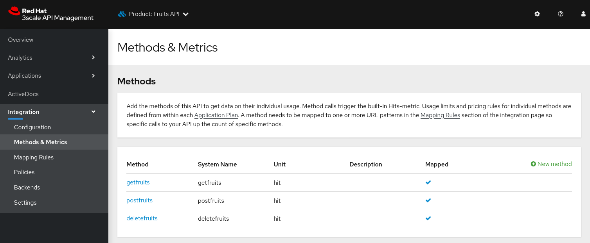 -
A URL Rewriting policy.
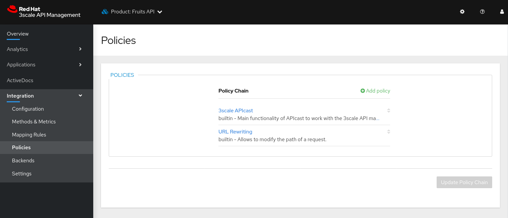This policy translates the public base path of the URL (
/v1) to the base path of the backend application (/).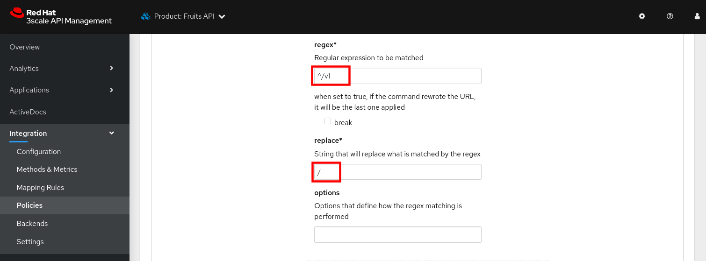 -
ActiveDocs for the API.
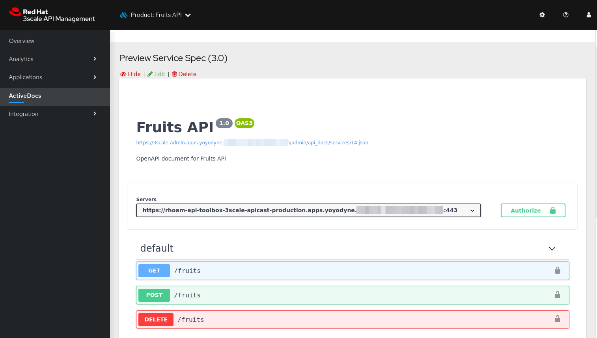
-
-
You can change the name of the generated Product.
$ podman run --rm toolbox 3scale service apply rhoam rhoam-api-toolbox --name="Fruits API V1"
On the 3scale Admin Portal this becomes:
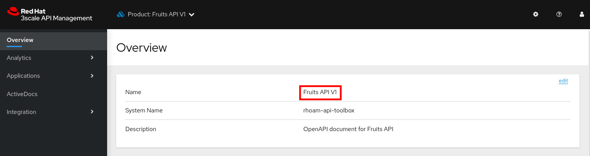
Create an Application Plan
The next step in deploying the API is defining one or more application plans.
-
Create an application plan:
$ podman run --rm toolbox 3scale application-plan apply rhoam rhoam-api-toolbox rhoam-api-toolbox/basic -n "Fruits API Basic Plan" --default --publish
Sample outputApplied application plan id: 36; Default: true; Published
On the 3scale Admin Portal:
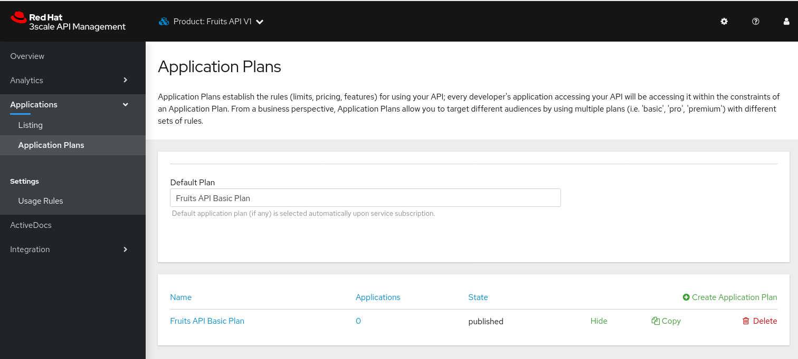 -
The toolbox also allows to export or import an application plan definition in yaml format. This allows to define more complex application plans including limits and pricing rules.
As an example, you can update the application plan created in the previous step to excludePOSTandDELETEoperations.-
Create a file with the application plan definition:
$ echo " --- plan: name: Fruits API Basic Plan state: published setup_fee: 0.0 cost_per_month: 0.0 trial_period_days: 0 cancellation_period: 0 approval_required: false system_name: rhoam-api-toolbox/basic limits: - period: eternity value: 0 metric_system_name: postfruits - period: eternity value: 0 metric_system_name: deletefruits " | tee /tmp/application-plan.yml
-
Import the definition file with the 3scale toolbox. The file you just created is mounted into the toolbox container:
$ podman run --rm -v /tmp/application-plan.yml:/tmp/application-plan.yml toolbox 3scale application-plan import --file=/tmp/application-plan.yml rhoam rhoam-api-toolbox
Sample outputApplication plan updated: 55 Created plan limit: [metric: 59, {"period"=>"eternity", "value"=>0}] Created plan limit: [metric: 60, {"period"=>"eternity", "value"=>0}] -
On the 3scale Admin Portal:
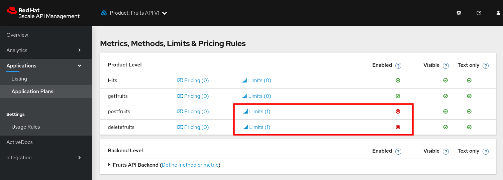
-
Create an Application
To create an application, an application plan is combined with an account and a service. At this moment the toolbox does not allow to create accounts, so you will use an existing account for the application.
-
Create an application for the
Developeraccount:$ podman run --rm toolbox 3scale application apply rhoam 1234567890abcdef --account=john --name="Fruits V1" --plan=rhoam-api-toolbox/basic --service=rhoam-api-toolbox
-
1234567890abcdefis the user_key for this application -
johnis the username of the admin user of the account. The account can be referenced by the account ID, or the username, email, or user_id of the admin user of the account.
-
-
Verify the existence of the Application on the 3scale Admin Portal:
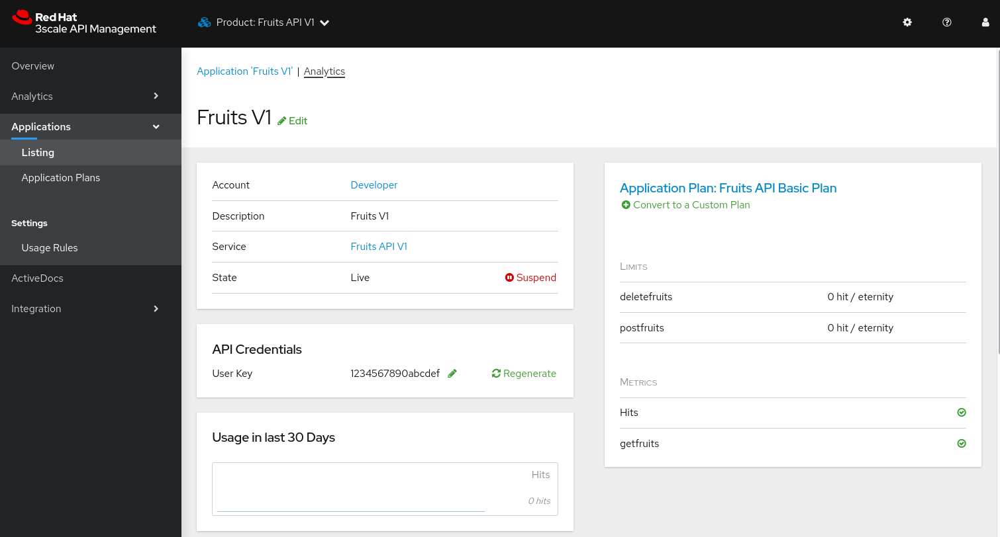 -
At this point you can test the API on the staging APIcast:
$ curl -v -X GET -H "Accept: application/json" -H "user_key: 1234567890abcdef" https://rhoam-api-toolbox-3scale-apicast-staging.apps.<OPENSHIFT_BASE_URL>/v1/fruits
Expected Response* Trying 34.205.xxx.xxx:443... * Connected to rhoam-api-toolbox-3scale-apicast-staging.apps.yoyodyne.xxx.yyy (34.205.xxx.xxx) port 443 (#0) [...]] > GET /v1/fruits HTTP/1.1 > Host: rhoam-api-toolbox-3scale-apicast-staging.apps.yoyodyne.xxx.yyy > User-Agent: curl/7.71.1 > Accept: application/json > user_key: 1234567890abcdef > * Mark bundle as not supporting multiuse < HTTP/1.1 200 OK < server: envoy < date: Sat, 10 Apr 2021 16:30:48 GMT < content-type: application/json < content-length: 99 < x-envoy-upstream-service-time: 129 < set-cookie: e5891a1fea7fd54d219ace35f200347d=94ac67ae4f1c90456f1481a5227e5f11; path=/; HttpOnly; Secure; SameSite=None < cache-control: private < * Connection #0 to host rhoam-api-toolbox-3scale-apicast-staging.apps.yoyodyne.xxx.yyy left intact [{"name":"Apple","description":"Winter fruit"},{"name":"Pineapple","description":"Tropical fruit"}] -
If the call to the staging APIcast succeeds, you can promote the API to production:
$ podman run toolbox 3scale proxy-config promote rhoam rhoam-api-toolbox
Sample outputProxy Configuration version 4 promoted to 'production'
-
Test the API on the production APIcast:
$ $ curl -v -X GET -H "Accept: application/json" -H "user_key: 1234567890abcdef" https://rhoam-api-toolbox-3scale-apicast-production.apps.<OPENSHIFT_BASE_URL>/v1/fruits
You have successfully deployed an API on 3scale using the 3scale toolbox.